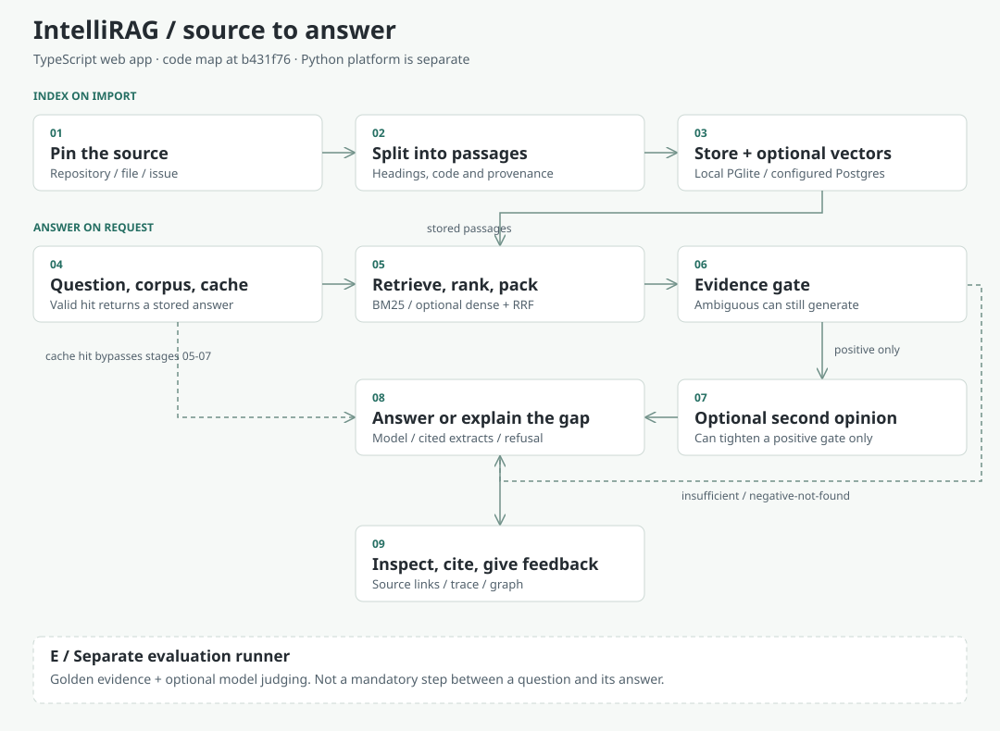

INTELLIRAG / WEB ARCHITECTURE
Follow the evidence.
Then trust the answer.
A source-to-answer map of the TypeScript web app. Open a stage to see its job, its failure boundary and the code that owns it.
Code inspected at b431f76, 17 October 2026. The Python platform is a separate implementation.
Import sources once. On a question, check a revision-aware cache, retrieve and pack passages, then classify the evidence. An optional second-opinion gate can make the gate stricter. Return a model answer, cited extracts or an explanation of the gap.
No key is needed to read this page. It contacts no external services.

Overview: solid arrows show the fresh-answer route; dashed arrows show bypass/alternative routes. On a phone, the full-width stage guide below carries every essential fact.
Index on import
01Pin the sourceRepository, file or issue URL
A repository root enumerates eligible files. A blob URL imports one file; an issue URL imports that issue. Source URI, path and revision make the evidence traceable. A successful import does not promise automatic refresh.
Import one pinned README before widening to a whole repository.
ingest.server.tscorpus.ts02Split into passagesStructure-aware text and code
Chunking preserves headings and code boundaries where possible. Each passage keeps its source identity. Approximate token counts guide packing; they are not provider billing tokens.
Check that a condition and its exception survive the split.
chunking.ts03Store text; optionally embedPersistence is a configuration choice
Local development uses file-backed PGlite. DATABASE_URL selects Postgres for durable hosted storage. Vercel without Postgres uses process-local ephemeral data. Compatible embeddings are optional, not a prerequisite for keyword search.
A cold start without durable storage can lose imported documents.
store.server.tsmemory.server.tsAnswer on request
04Question + corpus + cacheA hit bypasses fresh retrieval
The selected corpus limits the search. Cache policy includes retrieval settings, model/runtime configuration and graph edits; source revisions are checked by the graph cache. A valid hit returns a stored answer with its citations and trace. Bypass cache when measuring retrieval quality.
Corpus selection is not an authorization boundary.
query.server.tsgraphify/persist.server.ts05Retrieve, rank and packBM25; optional dense; bounded context
Keyword retrieval uses BM25. Dense retrieval requires compatible vectors. Hybrid fusion combines ranks with reciprocal rank fusion. The calibrated reranker is heuristic, not a trained cross-encoder. Context packing keeps at most three chunks within an approximate 1,400-token budget.
Record evidence lost between candidate retrieval and final packing.
06Classify the evidenceOverlap is a signal, not proof
The lexical evidence gate checks whether the packed passages support the request. Insufficient evidence or no passages returns a deterministic refusal. Ambiguous evidence can still generate using an ambiguity-specific prompt, or return ordinary cited extracts when no generation provider is configured. A negative-not-found outcome has its own deterministic response path.
Measure false refusals separately from unsupported answers.
evidence.tsquery.server.ts07Optional second-opinion gateOnly a positive gate is eligible
An optional server-side configuration enables the structured answer/refuse/clarify decision. A confident decision can change a positive gate to insufficient or ambiguous. Insufficient refuses; ambiguous still follows the alternate-prompt or cited-extracts path. The second-opinion gate never upgrades a refusal. Timeout, malformed output or low confidence leave the lexical result unchanged.
Optional external decision call; off by default. Usage is not a dollar-cost estimate.
query.server.ts08Answer with source linksConfigured model or cited extracts
With a generation provider, numbered passages guide a streamed answer. Without one, the app returns cited extracts. Citations map source numbers back to the selected chunks; a valid link does not prove that a passage supports a claim. Query traces keep the retrieval stages visible.
Follow a citation and check the actual claim against its source.
query.server.tsgemini.server.ts09Inspect and give feedbackGraph, trace and answer reuse
The interface exposes sources, retrieval traces and graph relationships. Feedback and graph preferences may affect later retrieval. Inferred relationships are not documentary facts. Stored answers can be reused through the revision/policy-aware cache.
Keep user corrections separate from original source evidence.
graphify/query.tsgraphify/reflect.tsEvaluate separately
EEvaluate on a separate pathNot an inline answer-approval step
The app evaluator calls the query pipeline and may use a configured model judge. Separately, the repo-support diagnostic calls retrieveFromRows directly against its frozen dataset. Both are separate from normal request handling. The committed p-queue diagnostic measured evidence retention without an LLM: 36.7% before, 70.0% after, versus 73.3% for plain BM25, on 15 answerable questions.
These figures are not answer accuracy, production latency or proof of superiority.
What this map does not claim
Dense retrieval and model generation depend on storage and provider setup. A citation is not proof of entailment. A graph edge is not proof of reasoning. The p-queue measurements are a narrow, first-party retrieval diagnostic, not generated-answer accuracy.
Design choices and tradeoffs · Evaluation protocol and raw evidence · Deployment and acceptance runbook